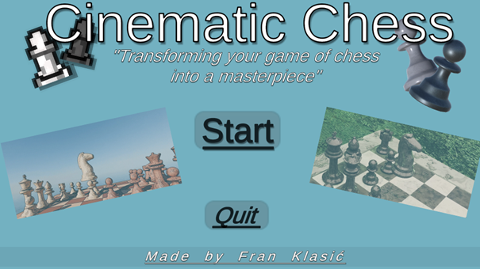
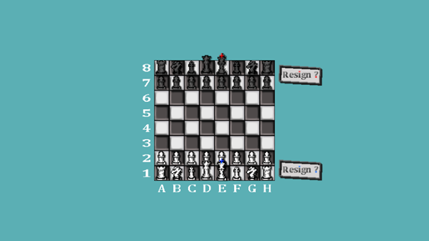
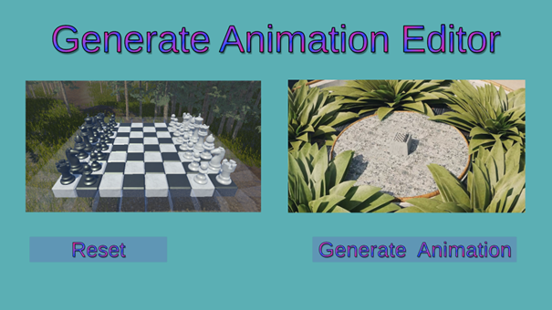
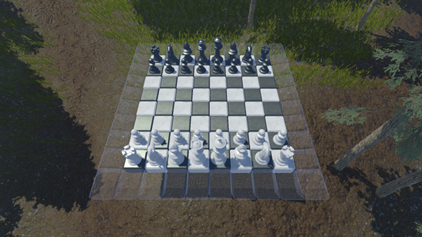

Cinematic Chess
Napravio: Fran Klasić
Opis
Posebnosti
-
Cinematic Chess je inovativna šahovska igra koja povezuje klasičnu 2D
partiju s dinamičkim 3D prikazom svake partije kao filmske animacije
-
Ova igra je namijenjena ljubiteljima šaha i videoigara koji žele
doživjeti šah na nov vizualno atraktivan način
-
Automatska filmska rekonstrukcija partije, tematske okoline i
pobjedničke scene koju igru čine zabavnom i nezaboravnom
-
Uz zabavan aspekt ima i edukativnu vrijednost: igrači mogu
pregledavati tijek partije u obliku filmske animacije, što omogućuje
lakše razumijevanje strategije i posljedica svakog poteza
Izrada igre
-
Blender animacije su mi bile inspiracija za izradu videoigre Cinematic
Chess
-
Cinematic Chess je izrađena u Unity Game Engine-u i programirana u C#
jeziku
- Sve 2D modele sam izradio osobno
- Besplatne 3d modele sam preuzeo preko interneta
Kako se igra
-
Kada pokrenete Cinematic Chess (klikom na gumb Start), dolazite do 2D
sučelja igre gdje možete odigrati svoju željenu partiju.
-
Za razliku od drugih šahovskih igara, u Cinematic Chess-u partija
završava tek kada se igrač preda ili kada kralj bude zauzet.
-
Tijekom šaha ili šah-mata, ostale figure se i dalje mogu kretati, što
omogućuje zanimljive i nepredvidive završnice.
- Nakon završetka vaše partije, dobit ćete rezultat igre.
-
Klikom na gumb Generate Animation otvara se Generate Animation Editor.
- U Generate Animation Editor-u imate dvije opcije
-
Reset – Ako vam se partija ne sviđa, možete se vratiti na početak i
odigrati novu.
-
Generate Animation – Ako ste zadovoljni partijom, možete generirati 3D
animaciju.
Slike




Video:
Korišteni alati
-
Cinematic Chess verzija 1 je izrađena u Unity Game Engine-u, verzija
6000.1.1f1.
-
Cinematic Chess verzija 1 je programirana u C# programskom jeziku
-
Cinematic Chess verzija 1 sadrži otprilike 2000 linija koda, ukupno 22
C# datoteke i 5 Unity scena
-
Rad na Cinematic Chess verzija 1 započeo sam 29. 4. 2025., a dovršio
9. 5. 2025.